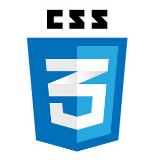
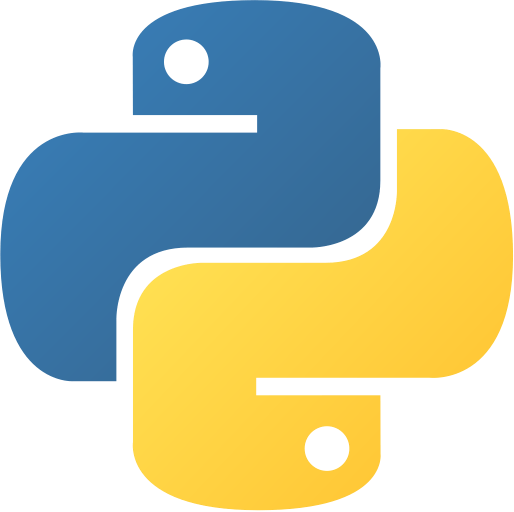

Dustin Murdock
About Me

Ever since I was thrilled to get my first MS-DOS command to work as a child I have always had a curiosity and interest in technology. This has led to me to learn how to build desktops and media centers, teach myself basic networking, and now to have taken the first steps down the path of software development.
In college I studied Biochemistry, Cellular, and Molecular Biology and became specifically interested in genetics. This was driven by a desire to understand the fundamental, hidden mechanisms that make things function. Then while working at a Cytogenetics laboratory I had the chance to work as a subject matter expert on a team to build a new laboratory information system. The development team quickly saw my passion and interest in technology and changed my role within the team to that of an internal product owner role. I helped make design decisions and helped with the layout of necessary databases. I became so familiar with how the software functioned that I was made the trainer for the entire laboratory staff and wrote most of the documentation and user manuals as well. The CEO said they had never seen such a seamless and successful transition to new laboratory software.
This lead to me wanting to learn more about programming languages and after a period of self-teaching I realized I wanted to pursue development in a serious manner. I decided the best route was to sign up for the full-stack development program at Nashville Software School. I have loved every minute of it while learning Javascript, React, SQL, and Python/Django and will finish in June 2020. The ability to create new things with code is exciting and I love the aspects of development such as troubleshooting and finding software solutions to solve real world problems. This is truly a career that speaks to the lifelong learner in me.
Podist
Front-End Capstone
Podist is a web application to help with finding, organizing, and recommending podcasts. The user does this by finding podcasts using an external API based keyword search or genre search. The user can then save the podcast data for the purpose of building lists that they can title and comment. Other users can see those lists and gain inspiration and can also see a gallery of all the podcasts saved by any user. The application is built using React and uses Material UI for styling of the elements It uses react-router for routing, json-server for referencing saved podcasts and lists data, and has full CRUD functionality.
Consilium
Group Trip Organization Application
Consilium, which is Latin for "plan", is an application that helps organize all the details of a group trip. A user can plan various trips and attach various information relevant to each of those trips. These include flight information, accommodations, and any suggested or planned activities. The user has access to views for each of these items as well as full CRUD functionality for each. It was built using React for the client-facing portion of the application and also incorporates react-router for navigation and Bootstrap React for styling. The server-side of the application is built using Python, Django, and uses the Django Rest Framework to provide a RESTful API and allows for URL query parameters to provide variability in requests.
Oculus Nebula
Workforce Management Application
Oculus Nebula is a workforce management full-stack application that was created as a group project using Python and Django and exhibits CRUD functions. The goal was to build an application for a human resources department to track various aspects of the company including departments, employees, computers, and training programs.
Nutshell
Personal Dashboard
Nutshell is a social oriented dashboard for users to organize daily tasks, events, friends and also had a chat board. It was built as a group project using Javascript, http-server, json-server, and uses JSON to store data locally

Keahua Arboretum
Command Line Application
Keahua Arboretum is a application built as a internal management style tool for use by staff of a arboretum. The application was built as a group project using Python and is used to manage biomes, animals, plants, the care of those features, and compiles reports of the arboretum.
Professional Experience
Full Stack Software Developer
Nashville Software School
- Built modern browser applications using HTML, CSS, JavaScript, React, and Material UI while learning in both team-based and individual capacities.
- Built various programs using Python such as a command line interface application.
- Created full stack web applications using Django for Python as well as a Django REST API using Django Rest Framework with a client-facing React application.
- Utilized industry standard tooling such as Git and GitHub for version control and Visual Studio Code
- Voted by classmates to receive Tomb Raider award for being best at "reading documentation and finding cool tricks and pearls of wisdom" which I shared with my classmates.
Special Analyst Molecular Diagnostics
MyGenetx
- Performed cutting edge testing such as Pharmacogenetic testing and analysis using PCR, Next Generation Sequencing, and Copy Number Analysis
- Interacted with other healthcare professionals to assist them in choosing proper test regimes as needed for patient care.
- Troubleshooting of lab issues using known procedures created new workarounds if necessary
Molecular Diagnostics Technologist
Pathgroup
- Managed multiple molecular testing regimes for the Hologic Panther system while managing 7 independent machines that performed 6 different molecular tests at rates over 300 tests per hour or machines running 1500 tests in a 3 hour period
- Revised test preparation process to check proper batching of most urgent patient tests. This changed the step from a 2 person hour long process to a 15 minute process performed by 1 person and ensured turn-around-times were met or exceeded.
- Managed the testing for Cobas 8800 as part of FDA clinical trials team for a new testing regime and served as a liaison with multiple teams to coordinate logistics and remedy issues.
Cytogenetics Technologist II
Genetics Associates Inc.
- Completed complex cytogenetic testing for oncology cases using esoteric testing methods as well as newborn genetic testing.
- Worked first as subject matter expert then as an internal product owner for development of new laboratory information software. Made sure all department needs were met while working to stay within timetable for project launch while working with external software developers.
- Served as primary trainer for majority of laboratory personnel in new software so that transition between older software system and new system was described as one of the best the CEO had ever seen. Also worked to create documentation, quick reference manuals, and standard operating procedures for the software.
- Coordinated with other healthcare providers to guide direction and methods of testing
Technologies
-

- 
- 